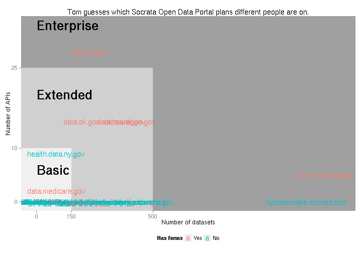

Semi-open data about pricing of open data
Some governments were awesome enough to open data about the pricing of Socrata products.
I thought it would be interesting to figure out which plans different Socrata clients were on and to see which features were most in demand.
Pricing structure
It looks like you’re getting one packaged open data portal website from Socrata, but it’s sold as a bunch of different products. Also, the Socrata Open Data Portal, even with all of its add-ons, is just the beginning of Socrata’s offerings.
I’m going to summarize it here, but you can read more in any of the price lists, such as the Washington price list
Socrata Open Data Portal
The main product that you hear about is the Socrata Open Data Portal. There are three standard levels of service for this, called “Basic”, “Extended” and “Enterprise”. Here are what I see as the main differences among these plans.
The basic plan (Soc-OD-B) is basically this:
- 150 datasets
- 10 premium APIs
- Costs just under $5,000 per month
Here’s the extended plan (Soc-OD-Ex).
- 500 datasets
- 25 premium APIs
- Costs just under $10,000 per month
And here’s the enterprise plan (Soc-OD-Ent).
- 1,500 datasets
- 50 premium APIs
- Costs just under $15,000 per month
The plans and their differences are a bit more complex, so I remind you to read the Washington price list if you care for the details.
Explorers
There are special “explorer” tools for these specific datasets.
- 311
- Checkbook
- Elections
- Health indicators
I don’t really know what these are, but Somerville seems to have a 311 explorer.
DataCollect
DataCollect is “a cloud-based platform that simplifies the design, deployment, and management of intelligent data capture apps from authorized users”.
Here’s the basic plan (Soc-DC-B).
- 5 data collection apps
- 50 active forms
- Costs just under $5,000 per month
Here’s the extended plan (SOC-DC-Ex).
- 10 data collection apps
- 100 active forms
- Costs just under $10,000 per month
And here’s the enterprise plan (Soc-DC-Ent).
- 20 data collection apps
- 500 active forms
- Costs just under $20,000 per month
Based on the full description in the Washington price list, I think there’s a lot more to DataCollect than I can see publically.
On the other hand, I do think we can see some of it publically; I’m guessing that the “active forms” are related to the form type on the open data portal.
GovStat
GovStat is a big product (in terms of cost) that I didn’t look at. I felt like it deserved its own section even though I’m not saying much about it. It too has three levels of service
Basic (Soc-GS-B) looks like this.
- 2 dashboards
- 20 goals
- 150 datasets
- Costs just under $7,500 per month
Extended (Soc-GS-Ex) is this.
- 5 dashboards
- 100 goals
- 500 datasets
- Costs just under $15,000 per month
And enterprise (Soc-GS-Ent) is this.
- 20 dashboards
- 400 goals
- 1,500 datasets
- Costs just under $30,000 per month
Many others
There are a bunch of small things that I won’t explain in much detail, but you can read about them in the various price lists.
- ArcGIS Connect
- API Foundry
- Custom work
- Training
Data for the present analysis
Today, I want to figure out which tier of Open Data Portal service each client has purchased. With that in mind, I collected four numbers (variables) for each data portal.
These two are related to the level (base, extended or enterprise) of the Open Data Portal product.
- Number of datasets
- Number of premium APIs
These two are related to other products.
- Number of datasets with “311” in the title: This is a proxy for whether the 311 Explorer product is being used.
- Number of forms: I think this tells us whether DataCollect is being used and which at which level (basic, extended or enterprise)
Acquiring the data
I collected all of the data over the past week. I downloaded lots of files, put them into an SQLite3 database, and then I ran the following queries.
To count datasets, I called the search API and removed federation and derived views. I arrived at the number of tables per data portal.
To count APIs, I went to the following URL for each data portal.
https://${catalog}/browse?limitTo=apis&utf8=%E2%9C%93
Here’s an example.
To count 311 datasets, I just searched for datasets with “311” in their titles.
And to count forms, I just looked for datasets with a displayType of “form”.
Results
Summary
This graph is pretty cool.

The x-axis tells us the number of datasets on a portal, the y-axis tells us the number of special APIs, and the color tells us whether the portal contains any form views. Most catalogs have no APIs, and these tend to also have few datasets; that’s the cluster at the bottom-left.
The three nested rectangles correspond to the three levels of service for the Socrata Open Data Portal software (basic, extended and enterprise) based on number of datasets and number of APIs. For example, portals inside the “Basic” rectangle are within the basic tier of usage. This gets us to my guess as to what plans people are on.
Which plan?
Based only on the number of datasets and APIs, here are some rough guesses as to which plans people are on. I’m guessing about the following products
- Which tier of the Socrata Open Data Portal product has been purchased
- Whether Socrata DataCollect product has been purchased
- Whether there are any 311 datasets, as proxy for whether the 311 Explorer has been purchased (This is the only guess that doesn’t relate to the previous plot.)
As I explain below, these guesses are based only on public data, so I think that they are low.
| Catalog | Data Portal plan | DataCollect plan | Has 311? |
|---|---|---|---|
| bronx.lehman.cuny.edu | Extended | None | Yes |
| controllerdata.lacity.org | Basic | Basic | No |
| data.acgov.org | Basic | None | No |
| data.act.gov.au | Basic | None | No |
| data.austintexas.gov | Extended | Basic | No |
| data.baltimorecity.gov | Extended | None | Yes |
| data.cdc.gov | Basic | None | No |
| data.ci.newark.nj.us | Basic | None | Yes |
| data.cityofboston.gov | Extended | None | No |
| data.cityofdeleon.org | Basic | Basic | No |
| data.cityofmadison.com | Basic | None | No |
| data.cms.hhs.gov | Basic | Basic | No |
| data.colorado.gov | Extended | None | No |
| data.dcpcsb.org | Basic | None | No |
| data.edmonton.ca | Extended | None | Yes |
| data.energystar.gov | Basic | None | No |
| data.hawaii.gov | Extended | Basic | No |
| data.honolulu.gov | Basic | None | Yes |
| data.kcmo.org | Basic | Basic | Yes |
| data.maryland.gov | Extended | None | No |
| data.medicare.gov | Basic | Basic | No |
| data.montgomerycountymd.gov | Basic | None | Yes |
| data.nola.gov | Basic | None | Yes |
| data.ny.gov | Enterprise | Basic | No |
| data.oaklandnet.com | Basic | None | No |
| data.ok.gov | Extended | Basic | No |
| data.oregon.gov | Extended | Basic | Yes |
| data.providenceri.gov | Basic | None | No |
| data.raleighnc.gov | Basic | None | No |
| data.redmond.gov | Basic | None | No |
| data.seattle.gov | Extended | Basic | No |
| data.sfgov.org | Extended | Basic | Yes |
| data.slcgov.com | Basic | None | No |
| data.somervillema.gov | Basic | None | Yes |
| data.southbendin.gov | Basic | None | Yes |
| data.undp.org | Basic | None | No |
| data.wa.gov | Basic | Basic | No |
| data.weatherfordtx.gov | Basic | Basic | No |
| data.wellingtonfl.gov | Basic | None | No |
| dati.lombardia.it | Extended | None | No |
| finances.worldbank.org | Extended | Basic | No |
| health.data.ny.gov | Basic | None | No |
| healthmeasures.aspe.hhs.gov | Extended | None | No |
| info.samhsa.gov | Basic | None | No |
| nmfs.socrata.com | Basic | Basic | No |
| nycopendata.socrata.com | Enterprise | None | Yes |
| opendata.go.ke | Extended | None | No |
| www.criminalytics.org | Basic | None | No |
| www.dallasopendata.com | Basic | None | No |
| www.halifaxopendata.ca | Basic | None | No |
| www.metrochicagodata.com | Enterprise | Basic | Yes |
| www.opendatanyc.com | Extended | None | Yes |
Number of forms
Note my choice to show the binary variable of whether any forms were on the portal (more that zero) rather than showing the count of forms. I did this because no portals had more than 50 publically visible forms, which is the threshold for jumping to the extended plan (if I’m interpreting things correctly).
I think that the “Has form” variable tells us whether the client has purchased at least the basic plan of DataCollect, and the number of forms doesn’t tell us much more about the product that the client has purchased.
Validation
I’ve heard from Socrata employees that four-fifths of Socrata’s data are private, so this is a very low estimate. It would nice to get some idea as to how wrong this is.
Most of the documents I found about pricing are just price
lists, but two of them indicate specific proposed purchases.
One of them is a super-basic plan (more basic than Soc-OD-B)
for Sacramento, and Sacramento doesn’t appear in the present data.
The other is for Hawaii, and that one does.
The plan for the Socrata Open Data Portal is called “Premium”, which is not one of the standard names; the price list just has “Basic”, “Extended”, and “Enterprise”. However, it seems to be pretty close to the Basic plan.
- The price is about right. (The basic plan is usually a bit under $5,000.)
- The “delivery”, which I presume means “bandwidth”, is about right. (It’s 1.25 TB, and the basic plan is 1 TB.)
My guesswork above suggests that Hawaii is on the extended plan, but this document suggests that Hawaii is on something like the basic plan. There are a few decent explanations for this.
- Hawaii did not end up making this particular purchase.
- Hawaii made this particular purchase, and it later increased its plan as it added more data.
- The “Premium” plan has all of these special features.
- I messed up somewhere.
My above guesswork also suggests that Hawaii has purchased DataCollect, but I don’t see DataCollect in the Hawaii document.
Hawaii has been hailed as a good example of government open data, my hunch is that they wound up needing a bigger plan in order to support their growing initiative.
Thoughts on metrics
I’ve recently been thinking about new metrics for progress in our data portal efforts, because number of datasets doesn’t say much. For example, I’ve looked at licensing and updating.
This look into pricing might shed some light on why we have been using the metric of number of datasets: The pricing is structured based on number of datasets. There are a bunch of other metrics in the site metrics API, and most (all?) of these metrics are also part of the definitions of the tiers of service for the Socrata Open Data Portal product.
Future research
I don’t feel like I’ve done much here beyond pointing out that one could look at the pricing of software. I really wanted to see what features people have in their plans and which ones people wind up using (like I did when looking at the use of charting tools).
I also wanted to get some idea of what people wind up doing when they’re reaching the limits of their plans. At some point they’ll probably buy a new one, maybe they also come up with interesting ways of reducing the number of datasets that they have. I’d need rather reliable knowledge about each client’s plan in order to do this.